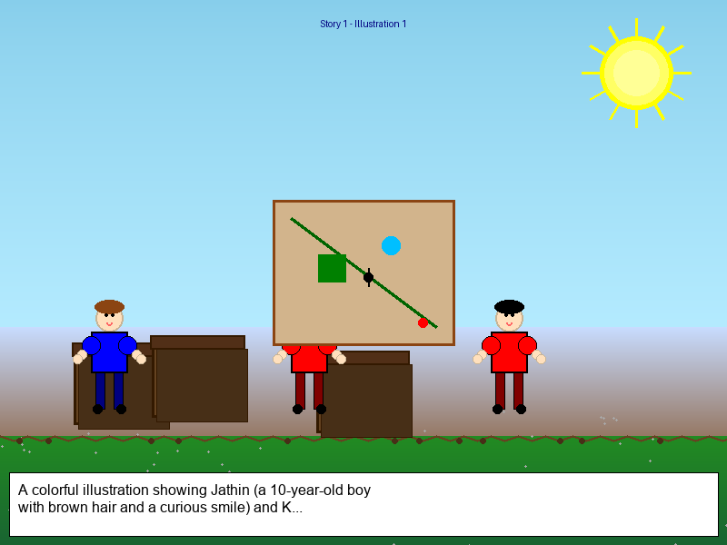
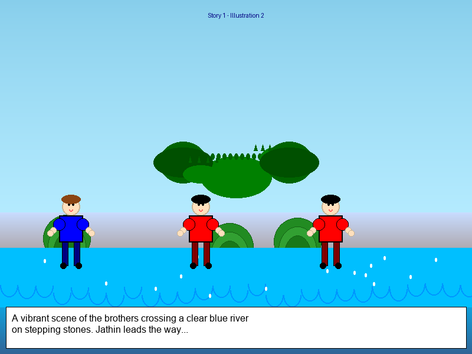
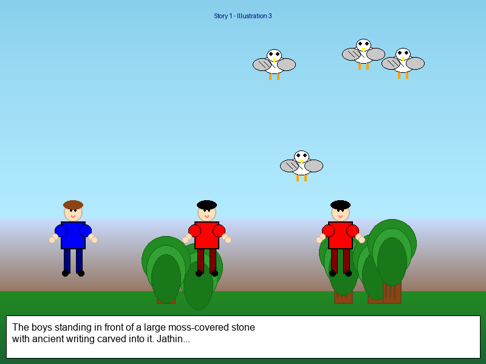
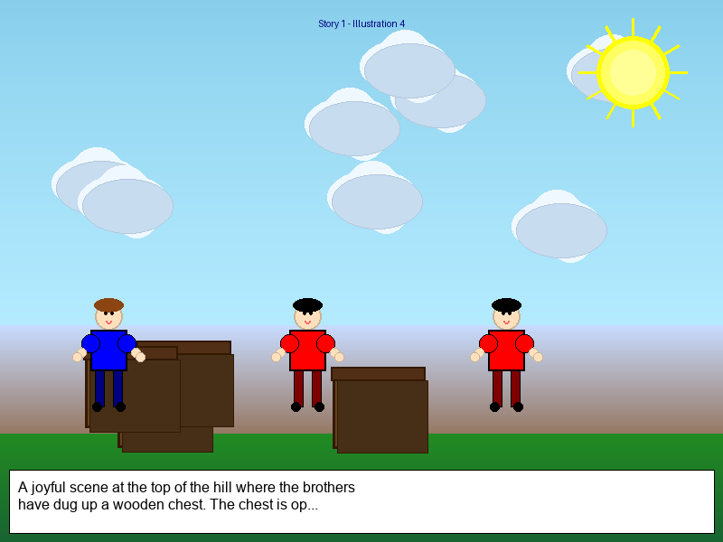

Story 1: The Hidden Treasure Adventure 🏴☠️
A thrilling tale of discovery and family treasures!
Illustration 1: The Discovery ✨

Once upon a time, in a cozy house at the edge of a sunny town, lived two brave brothers named Jathin and Kethan. Jathin was ten years old and loved solving puzzles, while Kethan was eight and always ready for an adventure.
One rainy afternoon, while exploring their grandpa's old attic, they stumbled upon a dusty chest hidden behind some forgotten boxes. "Look what I found!" Jathin exclaimed, pulling out a yellowed parchment. It was a treasure map!
The map showed their town with winding paths, a sparkling river, and a big red X at the top of Mystery Hill. "This must lead to buried treasure!" Kethan shouted, his eyes shining with excitement.
Illustration 2: Crossing the River 🌊

Their parents gave them permission to explore, but warned them to be careful and return before sunset. Armed with a backpack of snacks, a compass, and the map, the brothers set off on their grand adventure.
Their first challenge was crossing the Sparkling River. The water rushed swiftly, but they found large stepping stones that formed a natural bridge. Jathin went first, testing each stone to make sure it was steady. "It's safe!" he called back to Kethan. Kethan followed carefully, using a long stick for balance. As they crossed, they spotted rainbow-colored fish jumping in the water and dragonflies dancing in the air.
Illustration 3: The Riddle Stone 🪨

Next, they climbed the gentle slope of Mystery Hill. At the halfway point, they found a large stone covered in moss. Carved into the stone were these words:
"I speak without a mouth and hear without ears. I have no body, but I come alive with the wind. What am I?"
Jathin read the riddle aloud. "What could it be?" he wondered. Kethan looked around the forest. "Maybe it's a tree? No, trees have bodies." Suddenly, Kethan pointed to the treetops. "Look! The leaves are rustling in the wind!" They realized the answer was "the wind." The stone slid aside, revealing a hidden path.
Illustration 4: The Treasure Chest 💎

Following the path to the top of Mystery Hill, they found the spot marked with the red X. They dug carefully and soon uncovered a small wooden chest. With trembling hands, they opened it. Inside wasn't piles of gold or jewels, but old photographs, letters, and small keepsakes from their family's past.
"This is the real treasure," Jathin said softly, holding up a photo of their grandparents as children. "It's our family's memories."
Kethan nodded, tears of joy in his eyes. "The best adventures aren't about finding gold, but discovering what really matters."
As the sun set behind them, painting the sky in beautiful colors, the brothers carried their treasure home, knowing they had found something far more valuable than any buried gold.